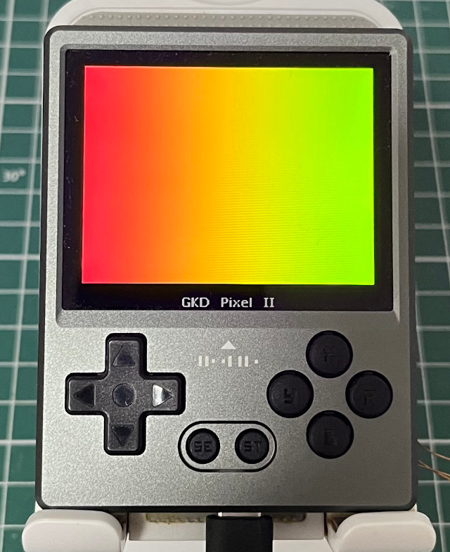

Steward
分享是一種喜悅、更是一種幸福
掌機 - GKD Pixel 2 - Wayland Client (xdg-shell) - OpenGL ES 3.2 - Use Texture
參考資訊：
https://jan.newmarch.name/Wayland/index.html
https://wayland.freedesktop.org/docs/html/apa.html
https://bugaevc.gitbooks.io/writing-wayland-clients/content/
main.c
#include <stdio.h>
#include <stdbool.h>
#include <string.h>
#include <unistd.h>
#include <fcntl.h>
#include <sys/mman.h>
#include <wayland-egl.h>
#include <wayland-client.h>
#include <linux/input-event-codes.h>
#include <EGL/egl.h>
#include <GLES2/gl2.h>
#include "xdg-shell-client-protocol.h"
#define LCD_W 640
#define LCD_H 480
#define BUF_W 320
#define BUF_H 240
#define STRIDE (LCD_W * 2)
#define SIZE (STRIDE * LCD_H)
static bool configured = false;
static bool running = true;
struct wl_region *regn = NULL;
struct wl_display *dis = NULL;
struct wl_surface *surf = NULL;
struct wl_registry *reg = NULL;
struct wl_compositor *comp = NULL;
struct wl_egl_window *egl_win = NULL;
struct xdg_surface *xdg_surf = NULL;
struct xdg_toplevel *xdg_toplevel = NULL;
struct xdg_wm_base *xdg_wm_base = NULL;
EGLConfig egl_conf = 0;
EGLContext egl_ctx = 0;
EGLDisplay egl_dis = 0;
EGLSurface egl_surf = 0;
EGLint egl_attribs[] = {
EGL_SURFACE_TYPE, EGL_WINDOW_BIT,
EGL_RENDERABLE_TYPE, EGL_OPENGL_ES2_BIT,
EGL_RED_SIZE, 8,
EGL_GREEN_SIZE, 8,
EGL_BLUE_SIZE, 8,
EGL_NONE
};
EGLint ctx_attribs[] = {
EGL_CONTEXT_CLIENT_VERSION,
2,
EGL_NONE
};
GLubyte pixels[BUF_W * BUF_H * 3] = {0};
GLfloat vVertices[] = {
-1.0f, 1.0f, 0.0f, 0.0f, 0.0f,
-1.0f, -1.0f, 0.0f, 0.0f, 1.0f,
1.0f, -1.0f, 0.0f, 1.0f, 1.0f,
1.0f, 1.0f, 0.0f, 1.0f, 0.0f
};
GLushort indices[] = {0, 1, 2, 0, 2, 3};
const char *vShaderSrc =
"attribute vec4 a_position; \n"
"attribute vec2 a_texCoord; \n"
"varying vec2 v_texCoord; \n"
"void main() \n"
"{ \n"
" gl_Position = a_position; \n"
" v_texCoord = a_texCoord; \n"
"} \n";
const char *fShaderSrc =
"#ifdef GL_ES \n"
"precision mediump float; \n"
"#endif \n"
"varying vec2 v_texCoord; \n"
"uniform sampler2D s_texture; \n"
"void main() \n"
"{ \n"
" gl_FragColor = texture2D(s_texture, v_texCoord); \n"
"} \n";
void cb_redraw(void *dat, struct wl_callback *cb, uint32_t time);
static void xdg_wm_base_handle_ping(void *data, struct xdg_wm_base *xdg_wm_base, uint32_t serial)
{
xdg_wm_base_pong(xdg_wm_base, serial);
}
static const struct xdg_wm_base_listener xdg_wm_base_listener = {
.ping = xdg_wm_base_handle_ping,
};
void cb_handle(void *dat, struct wl_registry *reg, uint32_t id, const char *intf, uint32_t ver)
{
if (strcmp(intf, wl_compositor_interface.name) == 0) {
comp = wl_registry_bind(reg, id, &wl_compositor_interface, 1);
}
else if (strcmp(intf, xdg_wm_base_interface.name) == 0) {
xdg_wm_base = wl_registry_bind(reg, id, &xdg_wm_base_interface, 1);
xdg_wm_base_add_listener(xdg_wm_base, &xdg_wm_base_listener, NULL);
}
}
void cb_remove(void *dat, struct wl_registry *reg, uint32_t id)
{
}
struct wl_registry_listener cb = {
.global = cb_handle,
.global_remove = cb_remove
};
static void xdg_surface_handle_configure(void *data, struct xdg_surface *xdg_surface, uint32_t serial)
{
xdg_surface_ack_configure(xdg_surface, serial);
if (configured) {
wl_surface_commit(surf);
}
configured = true;
}
static const struct xdg_surface_listener xdg_surface_listener = {
.configure = xdg_surface_handle_configure,
};
static void xdg_toplevel_handle_close(void *data, struct xdg_toplevel *xdg_toplevel)
{
running = false;
}
static void noop(void *arg0, struct xdg_toplevel *arg1, int32_t arg2, int32_t arg3, struct wl_array *arg4)
{
}
static const struct xdg_toplevel_listener xdg_toplevel_listener = {
.configure = noop,
.close = xdg_toplevel_handle_close,
};
int main(int argc, char **argv)
{
dis = wl_display_connect(NULL);
reg = wl_display_get_registry(dis);
wl_registry_add_listener(reg, &cb, NULL);
wl_display_roundtrip(dis);
printf("comp = 0x%08x\n", comp);
surf = wl_compositor_create_surface(comp);
printf("surf = 0x%08x\n", surf);
xdg_surf = xdg_wm_base_get_xdg_surface(xdg_wm_base, surf);
printf("xdg_surf = 0x%08x\n", xdg_surf);
xdg_toplevel = xdg_surface_get_toplevel(xdg_surf);
xdg_surface_add_listener(xdg_surf, &xdg_surface_listener, NULL);
xdg_toplevel_add_listener(xdg_toplevel, &xdg_toplevel_listener, NULL);
wl_surface_commit(surf);
while (wl_display_dispatch(dis) != -1 && !configured) {
}
regn = wl_compositor_create_region(comp);
wl_region_add(regn, 0, 0, LCD_W, LCD_H);
wl_surface_set_opaque_region(surf, regn);
egl_win = wl_egl_window_create(surf, LCD_W, LCD_H);
EGLConfig cfg = 0;
EGLint major = 0, minor = 0, cnt = 0;
egl_dis = eglGetDisplay((EGLNativeDisplayType)dis);
eglInitialize(egl_dis, &major, &minor);
eglGetConfigs(egl_dis, NULL, 0, &cnt);
eglChooseConfig(egl_dis, egl_attribs, &cfg, 1, &cnt);
egl_surf = eglCreateWindowSurface(egl_dis, cfg, egl_win, NULL);
egl_ctx = eglCreateContext(egl_dis, cfg, EGL_NO_CONTEXT, ctx_attribs);
eglMakeCurrent(egl_dis, egl_surf, egl_surf, egl_ctx);
GLuint vShader = 0;
GLuint fShader = 0;
GLuint pObject = 0;
vShader = glCreateShader(GL_VERTEX_SHADER);
glShaderSource(vShader, 1, &vShaderSrc, NULL);
glCompileShader(vShader);
fShader = glCreateShader(GL_FRAGMENT_SHADER);
glShaderSource(fShader, 1, &fShaderSrc, NULL);
glCompileShader(fShader);
pObject = glCreateProgram();
glAttachShader(pObject, vShader);
glAttachShader(pObject, fShader);
glLinkProgram(pObject);
glUseProgram(pObject);
GLuint textureId = 0;
GLint positionLoc = glGetAttribLocation(pObject, "a_position");
GLint texCoordLoc = glGetAttribLocation(pObject, "a_texCoord");
GLint samplerLoc = glGetUniformLocation(pObject, "s_texture");
glPixelStorei(GL_UNPACK_ALIGNMENT, 1);
glGenTextures(1, &textureId);
glBindTexture(GL_TEXTURE_2D, textureId);
glTexParameteri(GL_TEXTURE_2D, GL_TEXTURE_MIN_FILTER, GL_NEAREST);
glTexParameteri(GL_TEXTURE_2D, GL_TEXTURE_MAG_FILTER, GL_NEAREST);
glClearColor(0.0f, 0.0f, 0.0f, 0.0f);
glViewport(0, 0, LCD_W, LCD_H);
glClear(GL_COLOR_BUFFER_BIT);
glVertexAttribPointer(positionLoc, 3, GL_FLOAT, GL_FALSE, 5 * sizeof(GLfloat), vVertices);
glVertexAttribPointer(texCoordLoc, 2, GL_FLOAT, GL_FALSE, 5 * sizeof(GLfloat), &vVertices[3]);
glEnableVertexAttribArray(positionLoc);
glEnableVertexAttribArray(texCoordLoc);
glActiveTexture(GL_TEXTURE0);
glBindTexture(GL_TEXTURE_2D, textureId);
glUniform1i(samplerLoc, 0);
int cc = 0;
while (1) {
int x = 0, y = 0;
for (y = 0; y < BUF_H; y++) {
for (x = 0; x < BUF_W; x++) {
switch (cc % 3) {
case 0:
pixels[(y * BUF_W * 3) + (x * 3) + 0] = 0xff;
pixels[(y * BUF_W * 3) + (x * 3) + 1] = 0x00;
pixels[(y * BUF_W * 3) + (x * 3) + 2] = 0x00;
break;
case 1:
pixels[(y * BUF_W * 3) + (x * 3) + 0] = 0x00;
pixels[(y * BUF_W * 3) + (x * 3) + 1] = 0xff;
pixels[(y * BUF_W * 3) + (x * 3) + 2] = 0x00;
break;
case 2:
pixels[(y * BUF_W * 3) + (x * 3) + 0] = 0x00;
pixels[(y * BUF_W * 3) + (x * 3) + 1] = 0x00;
pixels[(y * BUF_W * 3) + (x * 3) + 2] = 0xff;
break;
}
}
}
cc+= 1;
glTexImage2D(GL_TEXTURE_2D, 0, GL_RGB, BUF_W, BUF_H, 0, GL_RGB, GL_UNSIGNED_BYTE, pixels);
glDrawElements(GL_TRIANGLES, 6, GL_UNSIGNED_SHORT, indices);
eglSwapBuffers(egl_dis, egl_surf);
}
eglDestroySurface(egl_dis, egl_surf);
eglDestroyContext(egl_dis, egl_ctx);
wl_egl_window_destroy(egl_win);
eglTerminate(egl_dis);
xdg_toplevel_destroy(xdg_toplevel);
xdg_surface_destroy(xdg_surf);
wl_surface_destroy(surf);
wl_compositor_destroy(comp);
wl_registry_destroy(reg);
wl_display_disconnect(dis);
return 0;
}
編譯
$ /opt/mini/bin/wayland-scanner private-code /opt/mini/arm-buildroot-linux-gnueabihf/sysroot/usr/share/waylandpp/protocols/xdg-shell.xml xdg-shell-protocol.c $ /opt/mini/bin/wayland-scanner client-header /opt/mini/arm-buildroot-linux-gnueabihf/sysroot/usr/share/waylandpp/protocols/xdg-shell.xml xdg-shell-client-protocol.h $ arm-linux-gnueabihf-gcc main.c xdg-shell-protocol.c -o test -I/opt/mini/include -lwayland-client -lwayland-egl -lEGL -lGLESv2
執行
# ./test
